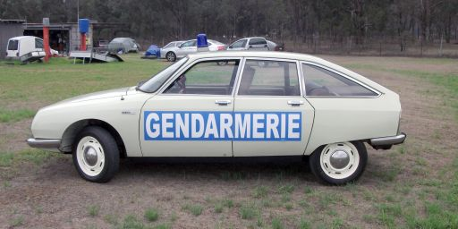
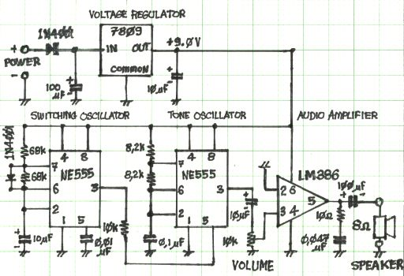

|
NAVIGATION
TOP of Page
MAIN Page
HOME Page
POLICE SIREN
About
Circuit
Parts
Loudspeakers
Final Build
|
About The Project
 French Gendarmerie Citroen GS Pursuit Vehicle
This began as a means to provide an authentic French Police siren sound to the Citroën GS French
Police pursuit vehicle being modelled by car club member Frank Connelley, as featured in the June
2020 issue of The Chevrons - the magazine of the Citroen Car Club of NSW. The circuit is basically
a NE555 IC oscillator, producing a symmetrical square wave at 1Hz. The output of the first
oscillator frequency modulates the second NE555 IC audio oscillator to switch between a low and
high tone at the 1 Hz rate. The output of the second oscillator is then amplified to about 0.5 watts
by the LM386 audio amplifer IC.
To maintain constant output independent of battery voltage, a 7809 voltage regulator IC supplies 9
volts to the circuit from the 11-15 volt input from the car battery. There is an OFF-ON switch to
disconnect the unit conveniently when not in use, rather than requiring it to be unplugged from the
car cigarette lighter. A bright blue LED flashes in sympathy with the high tone, indicating French
police presence. The audio output is via a 3.5mm phono plug connecting to a loudspeaker.
TOP
MAIN
HOME
Circuit
 Siren Circuit
TOP
MAIN
HOME
Parts
All the components were sourced from my local friendly Jaycar Electronics store.
The Main Components:
Case: HB-6006 - Snap Fit ABS Enclosure with flanges cut off.
PCB: HP9556 - Ultra Mini with notches cut in side to take case clips.
Standoffs: HB-0900 10mm for PCB
Cigarette Lighter Plug: PP-1995
NE555 Timer IC: ZL-3555 (2*req'd)
LM386 Audio IC: ZL3386
7809 Regulator IC: ZV-1509
And of course if you are lazy, Jaycar produce a similar device as a kit, using transistors instead of the first IC and having no audio amplifier or case. The PCB is much larger and the resulting unit is not so loud. It is in their catalogue under the Short Circuits Kits as SC2 Project - Hee-Haw Siren with Flashing Light: KJ-8204 with separate instructions as KJ-8205.
 Components fitted to PCB
Components fitted to PCB
TOP
MAIN
HOME
Loudspeakers
The speaker can be replaced with a horn speaker, at the risk of excessive sound levels. The 75mm
speaker supplied with the unit is more than adequate for entertainment purposes. I found an
interesting trick with a sawn off top half section from a 2 litre fruit juice plastic bottle. Cut a 30mm
diameter hole in the lid and carefully superglue a 40mm diam miniature cone loudspeaker to the
outside of the lid. Screw the lid back onto the top of the juice bottle. Voila - just have just made an
el-cheapo horn loudspeaker that is quite loud.
TOP
MAIN
HOME
Final Build

 External Views of the case.
External Views of the case.

 Connections to the case.
Connections to the case.
TOP
MAIN
HOME
|